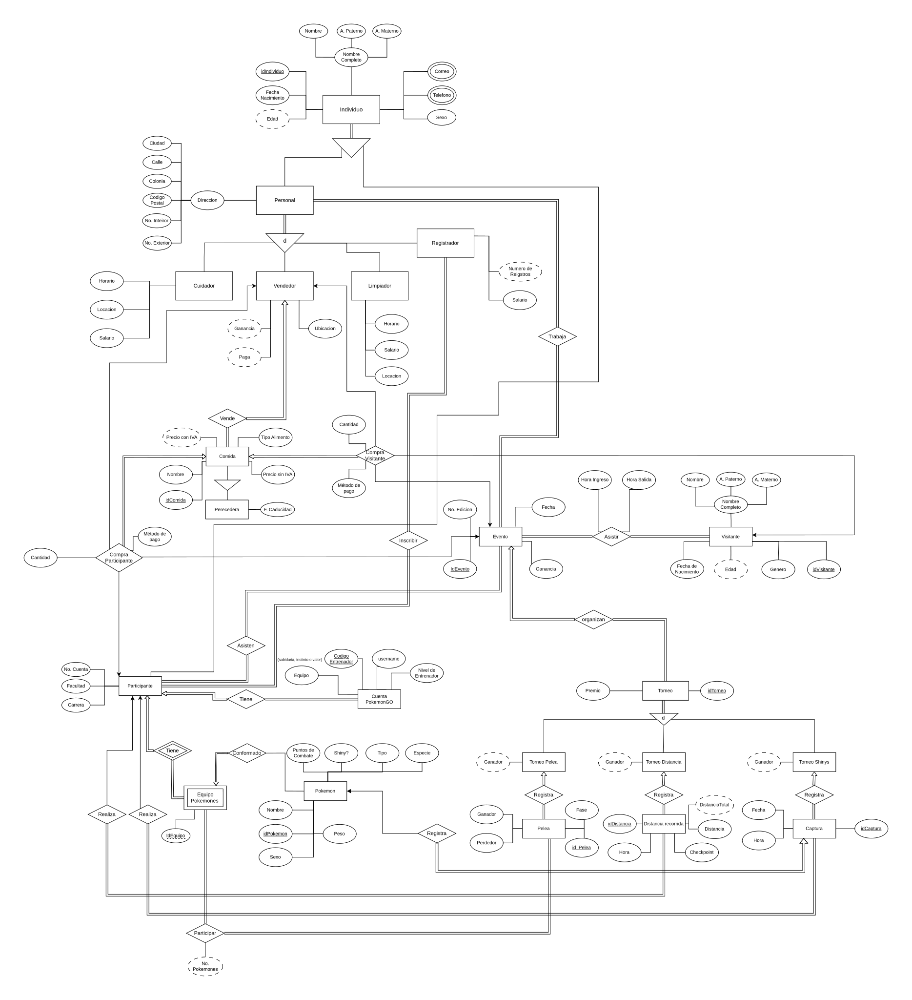
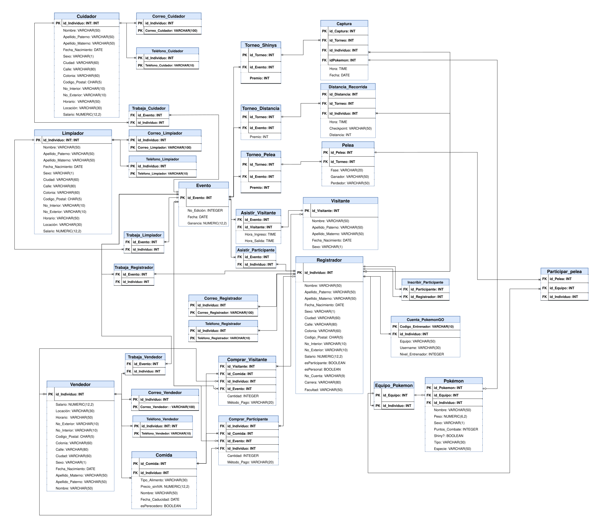

Gestión de Eventos Multirrol
Base de datos relacional para un torneo con múltiples roles de personal, participantes y ventas: modelado desde cero en PostgreSQL, con restricciones, programación en la base y consultas de reporte. Sobre esto, una API REST en Spring Boot con JDBC y un panel web para operarla.
Construido con
 PostgreSQL
PostgreSQL
 Java
Java
 Spring Boot
JDBC
Spring Boot
JDBC
-- Porcentaje de participantes por equipo SELECT c.Equipo, COUNT(DISTINCT c.id_Individuo) AS total, ROUND( 100.0 * COUNT(DISTINCT c.id_Individuo) / SUM(COUNT(DISTINCT c.id_Individuo)) OVER (), 2 ) AS porcentaje FROM Cuenta_PokemonGO c JOIN Registrador r ON r.id_Individuo = c.id_Individuo WHERE r.esParticipante = TRUE GROUP BY c.Equipo ORDER BY c.Equipo;
Una de las 15 consultas de reporte pedidas por el caso de uso
Resumen
Proyecto de la materia Fundamentos de Bases de Datos, se modeló desde cero la base de datos para un torneo con varias sedes, distintos tipos de competencia, personal con roles diferenciados (cuidadores, limpiadores, registradores y vendedores), participantes, visitantes y ventas.
El entregable no fue solo el esquema: incluye el modelo entidad-relación y su traducción al modelo relacional, el DDL con sus restricciones de integridad, la programación dentro de la base (disparadores y procedimientos almacenados) y consultas no triviales que responden al caso de uso.
Sobre ese esquema construí una aplicación en Spring Boot que expone la base por HTTP mediante JDBC, con un panel web para dar de alta, consultar, editar y eliminar registros.
Rol
Trabajo en equipo
Materia
Fundamentos de Bases de Datos
Estado
Proyecto académico
Escala
34 tablas · 45 llaves foráneas
Cómo funciona
Modelo E-R
Entidades, relaciones y cardinalidades a partir del caso de uso.
Esquema relacional
DDL con llaves, restricciones CHECK e integridad referencial.
Lógica en la base
Disparadores y procedimientos que hacen cumplir las reglas del torneo.
API y panel
Spring Boot expone la base por HTTP y un panel web opera el CRUD.
Funcionalidades clave
Modelado relacional
34 tablas y 45 llaves foráneas que modelan personal con roles distintos, participantes, visitantes, tres tipos de torneo y las ventas de cada evento.
Disparadores y procedimientos
Reglas del torneo aplicadas dentro de la base: impedir inscripciones incompatibles y recalcular las ganancias de un evento en cada venta.
Consultas de reporte
15 consultas con JOINs, agregaciones y funciones de ventana: ingresos por día, semana y mes, ventas por vendedor y estadísticas de los torneos.
API REST y panel de administración
Spring Boot con JDBC: SQL escrito a mano, parámetros nombrados y mapeo manual de resultados, más un panel en HTML, CSS y JavaScript para operar el CRUD.
Modelo de datos
El diseño partió de un modelo entidad-relación y se tradujo después al modelo relacional que dio origen al DDL. Haz clic en cualquiera de los dos para verlo en grande.


Stack Tecnológico
Base de datos
PostgreSQL
SQL
PL/pgSQL
Mockaroo
Backend
Java
Spring Boot
JDBC
OpenAPI
Interfaz
Arquitectura
- Esquema normalizado con integridad referencial y restricciones CHECK sobre cada tabla
- Reglas de negocio dentro de la base con disparadores y procedimientos en PL/pgSQL
- Aplicación Spring Boot por capas: controlador, servicio, repositorio y mapeo de filas
- Acceso a datos con JDBC y parámetros nombrados
Es el proyecto donde aprendí a pensar primero en los datos: modelar el dominio, imponerle restricciones y escribir el SQL a mano. Ya que una base bien diseñada sostiene todo lo que se construye encima, una mal diseñada se paga después.
¿Quieres ver más proyectos?
Regresa al portafolio para conocer el resto de mi trabajo.
Volver al portafolio